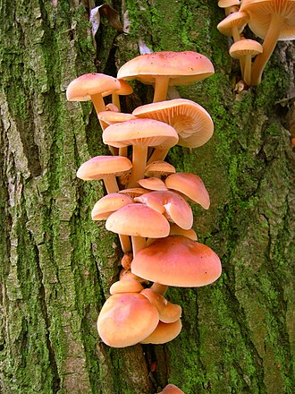

えのきたけ（えのき茸）の生産量 都道府県ランキング
全16県の順位と、とれた量
えのきたけが日本でいちばん多くとれるのは長野県です。8万418 tで、全国（13万215 t）の62%を占めます。

| 順位 | 都道府県 | 生産量 | 全国に占める割合 |
|---|---|---|---|
| 1位 | 長野県 | 8万418 t | 62% |
| 2位 | 新潟県 | 1万8,877 t | 14% |
| 3位 | 宮崎県 | 7,159 t | 5.5% |
| 4位 | 福岡県 | 4,757 t | 3.7% |
| 5位 | 大分県 | 2,130 t | 1.6% |
| 6位 | 熊本県 | 1,753 t | 1.3% |
| 7位 | 埼玉県 | 1,394 t | 1.1% |
| 8位 | 鹿児島県 | 1,277 t | 1.0% |
| 9位 | 宮城県 | 1,202 t | 0.9% |
| 10位 | 愛媛県 | 874 t | 0.7% |
| 11位 | 山形県 | 663 t | 0.5% |
| 12位 | 鳥取県 | 263 t | 0.2% |
| 13位 | 富山県 | 144 t | 0.1% |
| 14位 | 岡山県 | 2 t | 0.0% |
| 15位 | 福島県 | 0 t | 0.0% |
| 16位 | 秋田県 | 0 t | 0.0% |
この数字について
- 分類：きのこの仲間
- 全国の生産量：13万215 t
- この数字が表すもの：生産量（とれた重さ）
- 調査：特用林産基礎資料 令和7年
- 16県分を調査（調査していない県は順位に入りません）
えのきたけの生産量について、よくある質問
- えのきたけの生産量が日本一の都道府県はどこですか？
- 長野県です。特用林産基礎資料（令和7年）で8万418 tでした。
- えのきたけの生産量ランキング2位・3位はどこですか？
- 2位は新潟県（1万8,877 t）、3位は宮崎県（7,159 t）です。
- えのきたけの生産量ランキング4位・5位はどこですか？
- 4位は福岡県（4,757 t）、5位は大分県（2,130 t）です。えのきたけの全16県の順位は上の表のとおりです。
- えのきたけの全国の生産量はどれくらいですか？
- 13万215 t（令和7年）です。